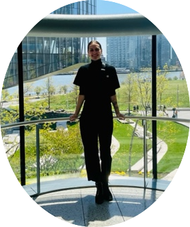
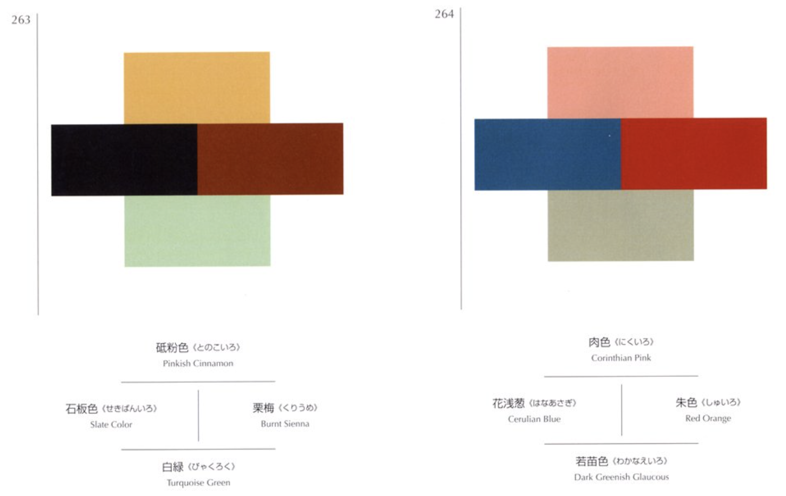

|
JACQUELINE R. M. A. MAASCH CV | Google Scholar | ResearchGate | Semantic Scholar | GitHub | LinkedIn I am a PhD student in Computer Science and NSF Graduate Research Fellow at Cornell Tech. I develop machine learning and causal inference methods for computational biomedicine. I am advised by Dr. Fei Wang, Dr. Volodymyr Kuleshov, and Dr. Kyra Gan. I am affiliated with the Weill Cornell Medicine Institute of AI for Digital Health. The first year of my PhD was internally funded by the Presidential Life Science Fellowship. Formally, my major concentrations are artificial intelligence and scientific computing. My minor concentration is in applied probability and statistics.
|
 |


{kind=link}
CURRENT WORKMy work emphasizes computational methods that automate and accelerate clinical research and drug development. I am particularly interested in probabilistic, generative, and latent variable models; leveraging probabilistic graphical models for causal insights; and the challenges that arise in low-data settings. In summer 2022, I was a Clinical Data Science Intern at Boehringer Ingelheim investigating deep learning methods for survival analysis. A subset of my publications are highlighted below. The rest of my publications can be accessed through Google Scholar. |

|
Local Discovery by Partitioning: Polynomial-Time Causal Discovery Around Exposure-Outcome Pairs. Under review. J Maasch, W Pan, S Gupta, V Kuleshov, K Gan, F Wang. A preliminary version of this work was accepted at the NeurIPS 2023 Causal Representation Learning Workshop. [ arXiv ] Local causal discovery enables efficient automated covariate selection under limited prior knowledge with guarantees on correctness. |

|
Molecular de-extinction of ancient antimicrobial peptides enabled by machine learning. Cell Host & Microbe 31, 2023. J Maasch*, M Torres*, M Melo, C de la Fuente. *Equal contribution. [ paper ] [ code ] [ nature news ] [ vox ] Machine learning guides bioinspired prospection for encrypted antimicrobial peptides that display in vitro and in vivo activity with low host toxicity. |
ACTIVITIESI co-organize Cornell's interdepartmental Causal Reading Group, a student-led discussion group on causality and causal inference. Please reach out if you are interested in participating. I co-developed CS 6006: Succeeding in the Graduate Environment, the first-year PhD seminar at Cornell Computer Science. PEER REVIEWI have served as a referee for the following venues: [Computing] Association for Computational Linguistics (ACL) Rolling Review; ICML Workshop on Structured Probabilistic Inference & Generative Modeling (SPIGM); NeurIPS Women in Machine Learning Workshop (WiML). [Life sciences] Communications Biology (Nature Portfolio); Bioinformatics (Oxford Academic); ACS Infectious Diseases (American Chemical Society). |
PRIOR WORKAs a master's student researcher at Penn Engineering, I used machine learning to investigate the physicochemical properties and therapeutic potential of antimicrobial peptides. My master's research was supported by the University of Pennsylvania's GAPSA-Provost Fellowship for Interdisciplinary Innovation and the Reproducible Research Fellowship, funded by the Open Knowledge Foundation and Alfred P. Sloan Foundation. Prior to this, I was a research assistant in various clinical and experimental biology labs. As an experimentalist, I helped develop molecular diagnostics for neglected tropical diseases in academia and for viral pathogens in industry. |
R PACKAGESI make R packages in my spare time, mostly for exploring color theory in data visualization. All packages are on GitHub. |
|  |
sanzo: R Color Palettes Based on the Works of Sanzo Wada – A CRAN Package. Inspired by the art and color research of designer Sanzo Wada (1883-1967), his Dictionary Of Color Combinations, and the incredible interactive site by Dain M. Blodorn Kim, this package brings Wada's color combinations to R for easy use in data visualizations. This package honors 60 of Wada's color combinations: 20 duos, 20 trios, and 20 quads. |
CONTACT
Preferred contact: In general, I can be reached through LinkedIn.
|
|
Updated July 2023. This website was adapted from this source code. |